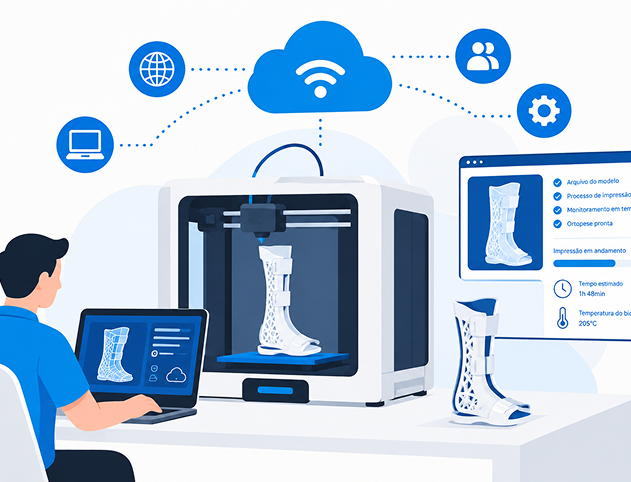
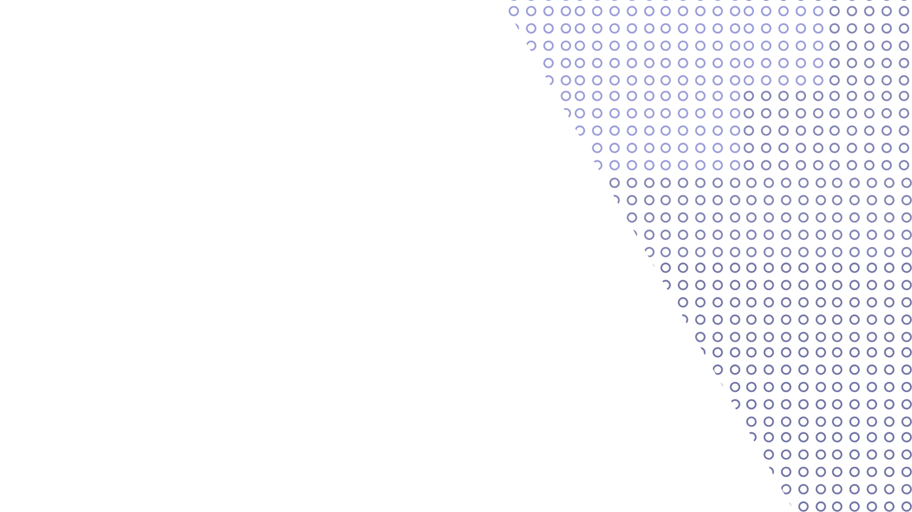
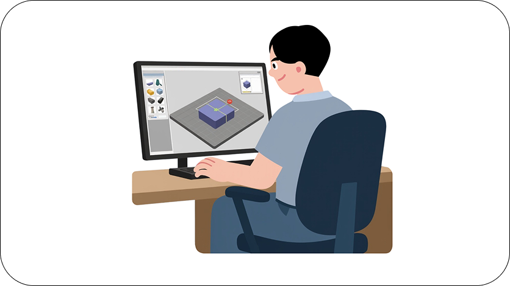

Sobre nós
O AMPLIA+ é o hub digital e inteligente que une as demandas de tecnologia assistiva de instituições de saúde à capacidade produtiva ociosa de impressoras 3D espalhadas por todo o país.



Milhares de pessoas aguardam o acesso a órteses, próteses e dispositivos de auxílio. Ao mesmo tempo, laboratórios universitários, empresas e comunidades maker possuem impressoras 3D de alta tecnologia que passam horas sem uso.
Transformamos esse cenário ao criar uma rede colaborativa e totalmente automatizada. Conectamos as demandas clínicas e os modelos 3D homologados por especialistas diretamente às unidades de impressão mais próximas, barateando custos, encurtando distâncias e acelerando a entrega para quem precisa.
Democratizar o acesso a soluções de tecnologia assistiva por meio do uso inteligente e integrado da manufatura aditiva descentralizada.

Tornar-se a principal rede aberta e colaborativa de manufatura aditiva em saúde assistencial e impacto social do Brasil.
Inclusão com Agilidade: Foco na autonomia e no bem-estar do paciente.
Rigor Clínico: Padrões sanitários e especificações técnicas imutáveis para garantir a segurança dos dispositivos.
Inovação Aberta: Integração entre universidades, saúde e a comunidade tecnológica.
Transparência: Governança clara e proteção rigorosa de dados pessoais conforme a LGPD.